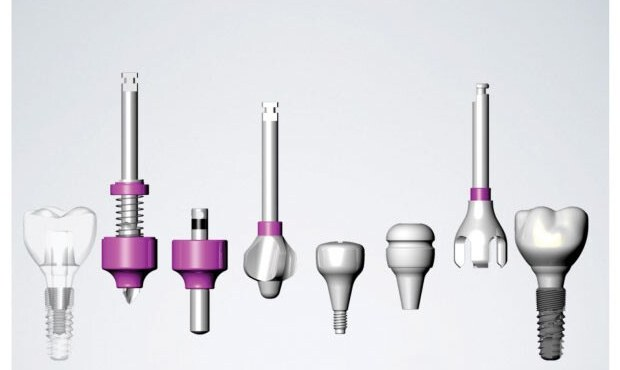
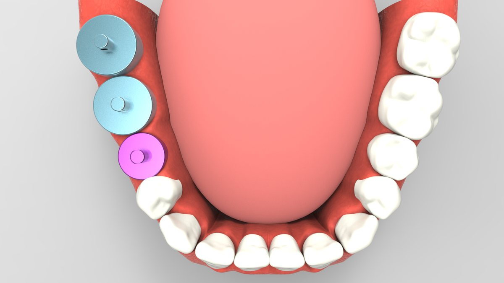
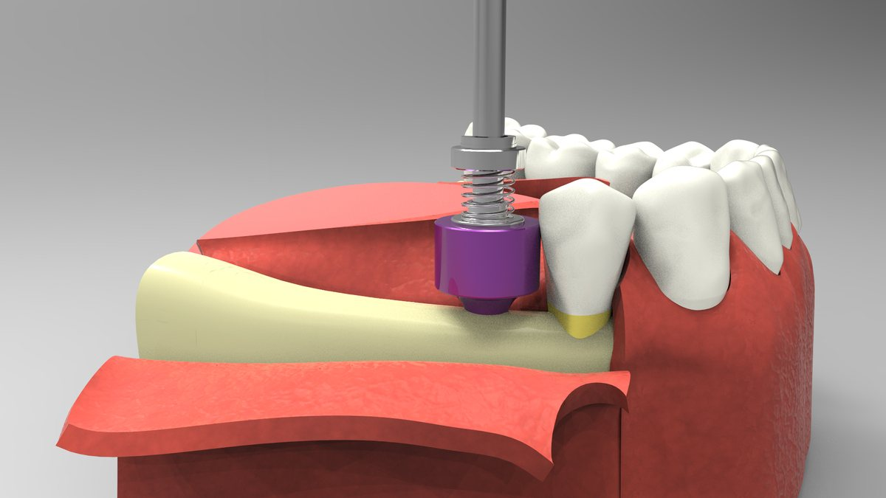
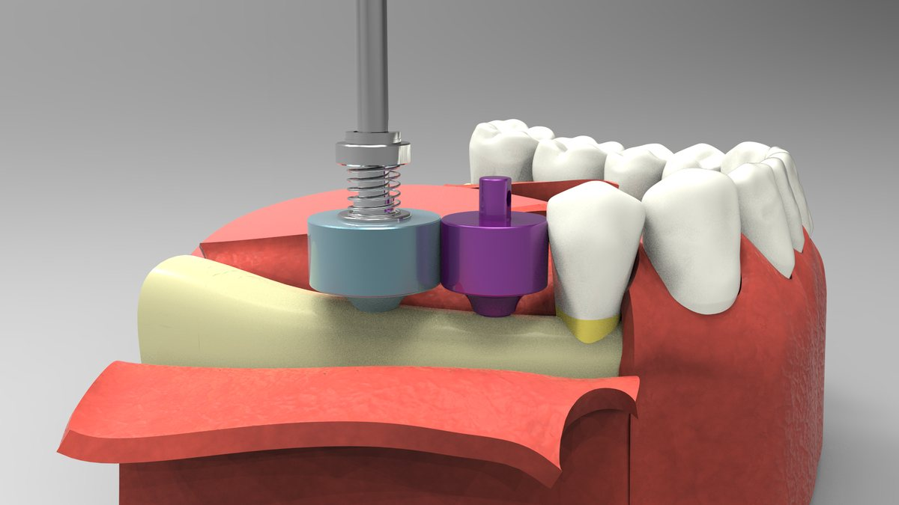
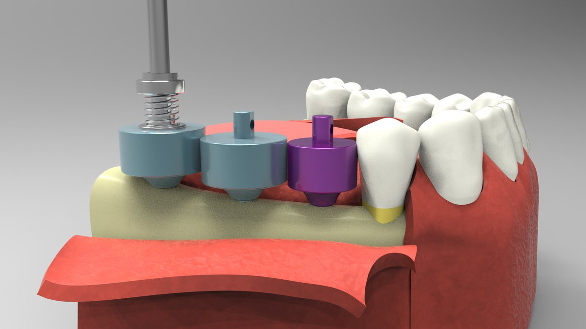
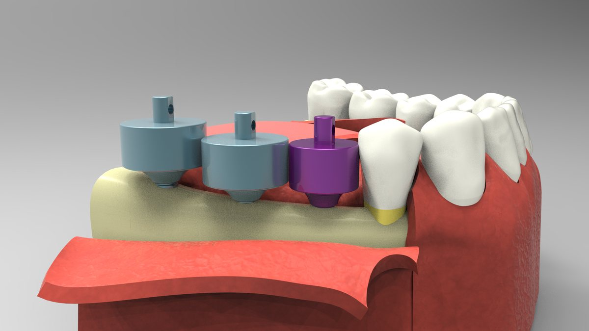
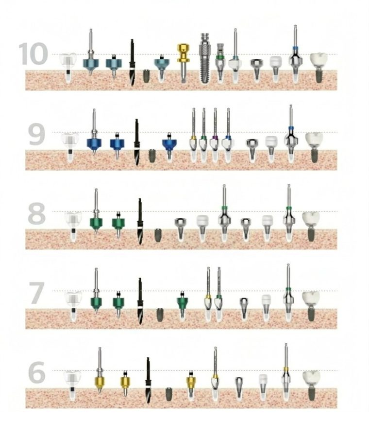

보철을 먼저 생각하고,
수술을 시작합니다.
탑다운 컨셉을 심플하게
임플란트를 보철의 중점에 심고, 대합치와의 거리를 확인해서 수술 단계에서 이미 보철을 준비합니다.
수술 → 힐링 → 보철, 세 단계
시작은 근원심 크기의 서지컬펜 드릴링. 힐링을 거쳐 어벗츠 플랫폼으로 보철을 만듭니다.

색 하나로,
수술부터 보철까지.
색은 직경입니다. 서지컬펜 · 서지컬핀 · 본쉐이퍼 · 힐링 · 어벗이 같은 색으로 이어져, 규격을 다시 찾지 않습니다.
위 숫자는 제품의 실직경이 아니라 최종 보철의 근원심경을 의미합니다.

근원심 크기로,
자리를 먼저 봅니다.
빈 자리 크기에 맞는 Pen과 Cup으로 시작하면, 식립 위치와 보철 크기를 함께 가늠할 수 있습니다.





원리를 설명하기 위한 3D 모형 이미지입니다. 실제 시술은 제품 첨부문서와 술자의 판단에 따릅니다.
시작은 근원심 크기
서지컬펜 드릴링.
직경 6부터 10까지, 드릴링부터 보철까지 쓰는 기구가 한 줄로 정리됩니다.

임플란트 수술 예시.
고를 것은
세 가지뿐입니다.
| 직경 색 | 6 · 7 · 8 · 9 · 10 |
|---|---|
| 심플 힐링 · 어벗 직경 | 6 · 7·8 · 9·10 |
| 높이 | XS · S · M · L · XL |
| 회전방지 | Hex · Non-Hex |
| 키트 | Surgical · Prosthetic |
식약처 신고 · 인증
품목입니다.
제조원 (주)애크로덴트 · 표기는 abuts.fit 스토어 상세 기준입니다. 품목 · 모델별 허가 · 신고 정보와 사용 방법은 제품 첨부문서에서 확인하십시오.
진료실과 기공소가
같은 규격을 씁니다.
치과의사
근원심 크기의 서지컬펜으로 드릴링을 시작하고, 서지컬핀으로 대합치 간격을 확인하며 식립합니다. 힐링 후 같은 색 규격의 어벗으로 보철을 이어갑니다.
치과기공소
파우더 없이 받은 구강스캔으로 보철을 디자인합니다. 규격 어벗으로 맞추기 어려운 케이스는 같은 화면에서 커스텀 어벗으로 넘깁니다.
진료 스태프
색으로 구분된 키트에서 규격을 고르고, 사용 후 세척 · Autoclave 멸균(132°C, 15분)으로 기구를 관리합니다.
사용 치과 · 기공소의 후기는 동의를 받은 실제 후기만, 확인을 거쳐 이곳에 싣습니다.
심플웨이,
자주 묻는 질문.
심플웨이는 무엇인가요?
탑다운 컨셉을 심플하게 구현합니다. 임플란트를 보철의 중점에 심고, 대합치와의 거리를 확인해 수술 단계에서 보철을 준비합니다.
시술은 어디서 시작하나요?
시작은 근원심 크기 서지컬펜 드릴링입니다. 이후 힐링을 거쳐 어벗츠 플랫폼으로 보철을 만듭니다.
색은 무엇을 뜻하나요?
직경입니다. 6은 노랑, 7은 초록, 8은 보라, 9는 파랑, 10은 하늘입니다.
심플 힐링과 어벗은 어떻게 고르나요?
직경은 6, 7·8, 9·10입니다. 높이는 XS · S · M · L · XL이고, 회전방지는 Hex · Non-Hex입니다.
키트는 무엇인가요?
Surgical과 Prosthetic입니다. Surgical로 식립하고, Prosthetic으로 힐링과 어벗을 체결합니다.
커스텀 어벗은 언제 쓰나요?
규격 어벗으로 맞추기 어려울 때입니다. abuts.fit 의뢰 화면에서 커스텀 어벗으로 넘길 수 있습니다.